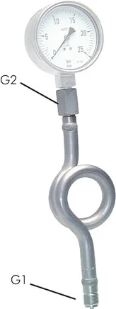

Khi đo áp suất hơi nóng (steam) hoặc môi chất nhiệt độ cao, nhiệt có thể làm hỏng Bourdon tube của đồng hồ. Ống siphon (xi phông / Wassersackrohr) theo DIN 16282 tạo "túi nước" ngưng tụ để hạ nhiệt, bảo vệ đồng hồ. Fast Group Engineering là đại lý cung cấp hàng chính hãng WIKA (Germany) tại Việt Nam.

Gợi ý chọn nhanh
- Cần bảo vệ đồng hồ trước hơi nóng, rung, xung áp hoặc ăn mòn.
- Cần lắp van cô lập để tháo/kiểm định gauge.
- Cần xử lý lệch chuẩn ren hoặc gioăng làm kín.
- Ren vào/ra, vật liệu và áp suất làm việc.
- Môi chất, nhiệt độ, tiêu chuẩn DIN/EN cần dùng.
- Loại phụ kiện: valve, siphon, snubber, gasket, adapter.
- Danh mục phụ kiện đồng hồ áp suất WIKA.
- Bài van chặn, siphon, snubber.
- Bài gioăng và đầu nối chuyển ren.
Tóm tắt nhanh
- Siphon giữ một cột chất lỏng ngưng tụ giữa môi chất nóng và đồng hồ.
- Hơi nóng bị hạ nhiệt trước khi tới Bourdon tube → tăng tuổi thọ đồng hồ.
- Hai dạng phổ biến: chữ U (U-form) và vòng tròn (circular/coil) theo DIN 16282.
- Dùng cho hơi, nước nóng, môi chất nhiệt độ cao.

Nguyên lý hoạt động
Ống siphon uốn cong (U hoặc vòng) giữ lại chất lỏng ngưng trong khúc uốn. Cột chất lỏng này ngăn hơi nóng tiếp xúc trực tiếp Bourdon tube; áp suất vẫn truyền qua cột lỏng nhưng nhiệt độ tại đồng hồ giảm mạnh. Trước khi vận hành lần đầu, cần mồi nước vào siphon (với ứng dụng hơi, nước ngưng sẽ tự hình thành).
Dạng U vs dạng tròn (DIN 16282)
| Dạng | Đặc điểm | Lắp cho |
|---|---|---|
| Chữ U (U-form) | Gọn, khúc uốn chữ U | Đường ống ngang |
| Vòng tròn (circular) | Cuộn tròn, cột lỏng dài hơn | Đường ống đứng, hơi nhiệt cao |
Vì sao cần siphon với hơi nóng?
- Hơi nước có thể >150–200°C, vượt giới hạn nhiệt của đồng hồ.
- Nhiệt trực tiếp làm sai số và lão hóa Bourdon tube.
- Siphon là giải pháp đơn giản, kinh tế, không cần bảo trì phức tạp.
Cách chọn (Checklist)
- [ ] Môi chất: hơi/nước nóng/dầu nhiệt.
- [ ] Áp & nhiệt độ làm việc.
- [ ] Dạng: U-form hay tròn theo hướng ống.
- [ ] Vật liệu: thép, inox 316 theo môi chất.
- [ ] Ren kết nối khớp đồng hồ & process (G½...).
- [ ] Kết hợp van chặn để kiểm định.
Lắp đặt trong cụm đồng hồ
Process (hơi) → Van chặn → Ống siphon (hạ nhiệt) → Đồng hồ áp suất
- Mồi chất lỏng vào siphon trước khi chạy (nếu cần).
- Dùng gioăng đúng chuẩn để kín.
Tại sao hơi nóng lại phá hỏng đồng hồ?
Bourdon tube là ống kim loại mỏng, biến dạng đàn hồi theo áp suất. Khi tiếp xúc trực tiếp hơi nóng ở nhiệt độ cao kéo dài, kim loại bị mỏi và lão hóa, làm sai số tăng dần và tuổi thọ giảm nhanh. Ngoài ra, phần lớn đồng hồ áp suất có giới hạn nhiệt độ môi chất cho phép (thường quanh 60°C với bản đổ dầu, cao hơn với bản khô nhưng vẫn giới hạn). Hơi bão hòa dễ vượt 150–200°C, nên nếu đưa thẳng vào đồng hồ, thiết bị sẽ hỏng sớm dù áp suất nằm trong thang đo. Siphon giải quyết đúng vấn đề nhiệt này mà không cần thiết bị đắt tiền.
Mồi nước cho siphon — bước hay bị bỏ qua
Để siphon phát huy tác dụng, khúc uốn phải chứa cột chất lỏng ngay từ đầu. Với hơi nước, hơi sẽ tự ngưng tụ và điền đầy khúc uốn sau một thời gian, nhưng lúc khởi động ban đầu nếu chưa có nước ngưng, hơi nóng có thể chạm đồng hồ. Vì vậy, thực hành đúng là mồi (điền) nước vào siphon trước khi cấp áp lần đầu. Với môi chất không tự ngưng tụ (dầu nhiệt chẳng hạn), việc mồi chất lỏng phù hợp càng quan trọng. Bỏ qua bước này là nguyên nhân khiến đồng hồ vẫn hỏng dù đã lắp siphon.
Siphon kết hợp van chặn trong cụm đo hơi
Trong hệ hơi, siphon hiếm khi đứng một mình. Cụm chuẩn thường gồm van chặn (gauge valve) + ống siphon + đồng hồ. Van chặn cho phép cô lập đồng hồ để kiểm định, thay thế hoặc xả áp mà không dừng đường ống; siphon lo phần hạ nhiệt. Nhiều van chặn cho hơi còn có cổng kiểm định (test connection) để đấu đồng hồ chuẩn khi hiệu chuẩn. Thiết kế cụm đầy đủ ngay từ đầu giúp bảo trì an toàn và nhanh về sau.
FAQ
Siphon có làm chậm đáp ứng đo không? Có chút trễ nhỏ, chấp nhận được để đổi lấy bảo vệ đồng hồ.
Dùng siphon có cần đồng hồ đặc biệt không? Không; chọn dải đo & vật liệu phù hợp là đủ, siphon lo phần nhiệt.
Chọn U hay tròn? U cho ống ngang phổ thông; tròn khi cần cột lỏng dài hơn/hơi nhiệt cao.
Vật liệu siphon nên chọn thế nào?
Theo môi chất và nhiệt độ: thép carbon cho hơi phổ thông, inox 316 cho môi chất ăn mòn hoặc yêu cầu cao. Nên đồng bộ vật liệu với van chặn và đồng hồ.
Sai lầm thường gặp
- Quên mồi nước lúc khởi động: hơi nóng chạm thẳng Bourdon tube trước khi cột nước ngưng hình thành.
- Chọn siphon nhưng không có van chặn: mỗi lần kiểm định/thay đồng hồ phải dừng và xả cả đoạn ống.
- Vật liệu siphon không hợp môi chất: siphon thép cho môi chất ăn mòn sẽ gỉ và rò.
- Lắp sai hướng khúc uốn: không giữ được cột lỏng, siphon mất tác dụng hạ nhiệt.
- Bỏ qua giới hạn nhiệt đồng hồ: tưởng có siphon là "miễn nhiễm nhiệt" — vẫn cần chọn đồng hồ và cấu hình phù hợp.
Ví dụ chọn nhanh cho đường hơi
Đo áp hơi bão hòa trên ống ngang, áp 0…10 bar: chọn đồng hồ Ø100 dải 0…16 bar (để áp làm việc quanh 2/3 thang), lắp cụm van chặn G½ + siphon chữ U thép hoặc inox 316 + gioăng đúng chuẩn. Với ống đứng hoặc hơi nhiệt rất cao, đổi sang siphon dạng vòng tròn để cột lỏng dài hơn, hạ nhiệt tốt hơn. Cùng một logic, chỉ điều chỉnh dạng siphon và vật liệu theo điều kiện thực tế.
Siphon và snubber khác nhau thế nào?
Siphon giải quyết vấn đề nhiệt độ cao (hơi nóng) bằng cột nước ngưng; snubber giải quyết vấn đề xung áp/dao động bằng cách hạn chế dòng. Hai phụ kiện cho hai mục đích khác nhau, đôi khi dùng cùng lúc.
Có cần vệ sinh siphon định kỳ không?
Với hơi sạch thì hầu như không; nếu môi chất có cặn hoặc dễ đóng cáu, nên kiểm tra và làm sạch khúc uốn trong các đợt bảo trì để tránh nghẽn.
Wassersackrohr nghĩa là gì?
Đây là tên tiếng Đức của ống siphon ("ống túi nước") — chỉ khúc uốn giữ cột nước ngưng để bảo vệ đồng hồ khỏi hơi nóng.
Cần tư vấn hoặc báo giá ống siphon WIKA?
Gửi môi chất, áp/nhiệt, dạng, ren để nhận báo giá trong 24h.
- Email: minhduc@fastgroup.vn · Zalo: (+84) 938 888 958
Fast Group Engineering – đại lý cung cấp hàng chính hãng WIKA (Germany) tại Việt Nam.
Bài liên quan: [Van chặn đồng hồ áp suất] · [Snubber giảm xung áp] · [Gioăng đồng hồ EN 837-1/DIN 16258] · [Đồng hồ áp suất WIKA là gì]